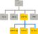

Analysing a Real Program
Last updated on 2026-09-29 | Edit this page
Overview
Questions
- What are some good strategies to learn from code that I did not write myself?
- How can I use a chatbot to help build my own understanding of how code works?
Objectives
After following this episode, learners will be able to…
- Run a block of code.
- Trace the flow of a block of code.
- Make small modifications to a block of code and observe how its behaviour changes.
- Prompt a chatbot for an explanation of a line or block of code.
Understanding Existing Code
The code below generates a set of line plots showing how average life expectancy has changed over time in countries in the Americas, which are then saved to image files in an output directory.
R
library(ggplot2)
plot_life_expectancy <- function(df, country, outdir="results") {
lifeExp_plot <- ggplot(data = df[df$country == country,], mapping = aes(x = year, y = lifeExp)) +
geom_line()
ggsave(filename = paste0(outdir, "/", country, "_lifeExp.png"), plot = lifeExp_plot, width = 12, height = 10, dpi = 300, units = "cm")
}
gapminder <- read.csv('gapminder_data.csv')
americas <- gapminder[gapminder$continent == "Americas",]
for (country in unique(americas$country)) {
plot_life_expectancy(americas, country)
}
There is a lot to understand in these eleven lines and, if you have never written any code before, it can feel overwhelming to be presented with a program like this. If we are going to generate our code with AI instead of writing it line-by-line, inspecting a lot of code is the trade we make in exchange for the increased speed of writing. It may be tempting to assume that AI-generated code is correct. But we have a responsibility to ensure that the results produced by our code are correct. A key skill we need to develop is the ability to trace the execution of code, to understand how information flows through the program and what might be done to it along the way. By practicing this skill, we can develop our ability to review code that has been generated.
Reverse-Engineering
Time worn strategies for understanding what a chunk of code is doing are to a) run it, and b) mess around with it! It is helpful to spend some time doing this even if you plan to generate all of your code with AI.
If the code we want to understand is part of a larger program, we can copy out a line or chunk and run it.
Think before you run the code
A good habit to get into, to help you learn how to read code, is to try to predict what the output of some code will be before you run it. Comparing the results against your prediction will help you spot and correct any misconceptions you might have picked up.
R
unique(americas$country)
OUTPUT
[1] "Argentina" "Bolivia" "Brazil" "Canada" "Chile"
[6] "Colombia" "Costa Rica" "Cuba" "Dominican Republic" "Ecuador"
[11] "El Salvador" "Guatemala" "Haiti" "Honduras" "Jamaica"
[16] "Mexico" "Nicaragua" "Panama" "Paraguay" "Peru"
[21] "Puerto Rico" "Trinidad and Tobago" "United States" "Uruguay" "Venezuela" R Studio Makes This Easier
Working in R Studio, you can also select some of the code and press the “Run” button to run only that selection. This works for multiple lines, a single line, or even part of a line.
Making a small adjustment to the code before running it again is another good way to build and test your understanding.
R
unique(americas$continent)
OUTPUT
[1] "Americas"As long as you do this on a copy, you can always recover the original version. And you can learn a lot about how a program works through this kind of reverse-engineering.
Let’s do this again to explore what the paste0(...) part
is doing:
R
paste0(outdir, "/", country, "_lifeExp.png")
ERROR
Error: object 'outdir' not foundThis error message tells us that we cannot run that section of the
code on its own: outdir is a variable that gets
assigned a value in the code, and that value is then used in the
paste0 function in some way (country
is another variable). When we run the whole program, these variables are
being created and assigned a value. But when we try to run the function
in isolation, they are not. So we need to also define the variables, or
replace them with values directly.
R
# option 1: assign values to the variables
outdir <- "output_directory"
country <- "germany"
paste0(outdir, "/", country, "_lifeExp.png")
OUTPUT
[1] "output_directory/germany_lifeExp.png"R
# option 2: replace the variables with literal values
paste0("output_directory", "/", "germany", "_lifeExp.png")
OUTPUT
[1] "output_directory/germany_lifeExp.png"Paths
In our program, the output of this paste0 function call
is used as the name of the image file created to store the data
visualisation. output_directory/germany_lifeExp.png is the
relative path of the image file that will be created. Paths are
the way that programs describe locations on the computer’s filesystem,
and there are two types: relative paths and absolute paths. A
relative path defines a location on the filesystem relative to your
current location, whereas an absolute path describes its location
from the root of the filesystem.
The filesystem is a tree-like structure branching out from the root:

The root folder is referred to as /, with more
forward-slashes used to indicate levels of the filesystem. For example,
/Users/nelle describes the absolute path of the user
nelle’s home directory. From Nelle’s directory, a relative
path to user imhotep’s home directory would be
../imhotep, where .. means “up one level”.
Paths can take a bit of getting used to! Software Carpentry’s lesson The
Unix Shell is a good resource for learning more about them.
Peeking Inside The Machine
While doing the kind of reverse-engineering we described above, we
may want to keep track of the values that particular variables hold and
how those change while the code is running. While advanced “debugger”
tools exist to do this more rigorously, a lot of beginners and
experienced programmers take a less sophisticated but more accessible
approach: telling the program to report what things look like while it
runs. This is done with the print function:
R
for (country in unique(americas$country)) {
print(country)
plot_life_expectancy(gapminder, country)
}
OUTPUT
[1] "Argentina"
[1] "Bolivia"
[1] "Brazil"
[1] "Canada"
[1] "Chile"
[1] "Colombia"
[1] "Costa Rica"
[1] "Cuba"
[1] "Dominican Republic"
[1] "Ecuador"
[1] "El Salvador"
[1] "Guatemala"
[1] "Haiti"
[1] "Honduras"
[1] "Jamaica"
[1] "Mexico"
[1] "Nicaragua"
[1] "Panama"
[1] "Paraguay"
[1] "Peru"
[1] "Puerto Rico"
[1] "Trinidad and Tobago"
[1] "United States"
[1] "Uruguay"
[1] "Venezuela"These print lines can be commented out and in as needed
while you experiment with your code, and you can delete them when you
are done.
Keep Exploring
Referring to the example code block at the top of this episode, find another part of the code that you would like to understand better.
- What do you think it is doing?
- How could you isolate and modify that part of the code to find out whether your prediction is correct?
Try making these changes and reflect on whether or not your expectations were correct.
You might choose to look at how the name of the output file changes
as the program runs. To do that, we need to edit the
plot_life_expectancy function that is run in loop. Unlike
built-in functions like print and unique,
which exist in R by default, plot_life_expectancy is
defined in our program.
R
plot_life_expectancy <- function(df, country, outdir="results") {
lifeExp_plot <- ggplot(data = americas[americas$country == country,], mapping = aes(x = year, y = lifeExp)) +
geom_line()
ggsave(filename = paste0(outdir, "/", country, "_lifeExp.png"), plot = lifeExp_plot, width = 12, height = 10, dpi = 300, units = "cm")
}
It is then run in the for loop, once for each country in
the Americas, with the country parameter changing each
time.
R
for (country in unique(americas$country)) {
plot_life_expectancy(gapminder, country)
}
To look at how the name of the output file used in that function
changes each time, we need to tell our function to print out the result
of paste0:
R
plot_life_expectancy <- function(df, country, outdir="results") {
lifeExp_plot <- ggplot(data = americas[americas$country == country,], mapping = aes(x = year, y = lifeExp)) +
geom_line()
print(paste0(outdir, "/", country, "_lifeExp.png"))
ggsave(filename = paste0(outdir, "/", country, "_lifeExp.png"), plot = lifeExp_plot, width = 12, height = 10, dpi = 300, units = "cm")
}
This print will be run every time the
plot_life_expectancy function is called, so we will see it
for each country as the loop progresses:
R
for (country in unique(americas$country)) {
plot_life_expectancy(gapminder, country)
}
OUTPUT
[1] "results/Argentina_lifeExp.png"
[1] "results/Bolivia_lifeExp.png"
[1] "results/Brazil_lifeExp.png"
[1] "results/Canada_lifeExp.png"
[1] "results/Chile_lifeExp.png"
[1] "results/Colombia_lifeExp.png"
[1] "results/Costa Rica_lifeExp.png"
[1] "results/Cuba_lifeExp.png"
[1] "results/Dominican Republic_lifeExp.png"
[1] "results/Ecuador_lifeExp.png"
[1] "results/El Salvador_lifeExp.png"
[1] "results/Guatemala_lifeExp.png"
[1] "results/Haiti_lifeExp.png"
[1] "results/Honduras_lifeExp.png"
[1] "results/Jamaica_lifeExp.png"
[1] "results/Mexico_lifeExp.png"
[1] "results/Nicaragua_lifeExp.png"
[1] "results/Panama_lifeExp.png"
[1] "results/Paraguay_lifeExp.png"
[1] "results/Peru_lifeExp.png"
[1] "results/Puerto Rico_lifeExp.png"
[1] "results/Trinidad and Tobago_lifeExp.png"
[1] "results/United States_lifeExp.png"
[1] "results/Uruguay_lifeExp.png"
[1] "results/Venezuela_lifeExp.png"All of this experimentation is likely to have helped you develop your understanding of how information flows through the program. This ability to trace the flow of code, understanding how variables are handled and how their values change as the program runs, is a vital skill. Even if the code itself is generated with AI – or written by somebody else! – building your own mental model of what it does and how will help you ensure that the results it produces are correct.
Go With The Flow
Using pencil and paper, https://tldraw.com, or another tool, draw a flow chart describing the execution of the program in the code block at the top of this episode.
Getting Unstuck
Manually reverse-engineering code will not always help you, though,
and you can expect to get stuck from time to time. For example, what
happens if we run the library(ggplot2) part of the example
code in isolation?
R
library(ggplot2)
After a short pause (a sign that something is happening),
the prompt returns but we get no additional output. This is difficult to
interpret! We might try adding a call to print afterwards,
but that doesn’t seem to help:
R
library(ggplot2)
print(ggplot2)
ERROR
Error: object 'ggplot2' not foundWe could also adjust the code and re-run it, to see what happens:
R
library(fgplot2)
ERROR
Error in library(fgplot2) : there is no package called ‘fgplot2’This gives us some more information, but how helpful it is will depend on our prior knowledge of the concepts and technical terminology of the R language. If we do not already know what a package is, the error message is of limited use.
R provides a built-in help function. We can use it to
view the documentation of a given function.
R
help(library)
These documentation pages are a rich source of information but are
usually more accessible to those already knowledgable about the
language/with more experience of coding. If help does not
give you what you need, you could try:
- Searching the internet for an answer to your question. The chances are good that (many) other people have got stuck with the same thing, asked for help, and received an answer that will be useful to you as well. Q&A forum websites like StackOverflow are particularly good sources for this kind of information.
- Ask another person, or your chatbot.
Asking for Help
Here is some advice to follow when asking for help, whether from a person or a chatbot:
- If you are encountering an error, copy and paste the error message into your message asking for help.
- Also include a copy of the code where you are having trouble and, if applicable, an example of the data you are feeding into it.
- Be specific about the task you are working on, the problem you are having (the error message may be enough), and/or what it is about the code that you do not understand.
- Unless the person or chatbot is already aware of your level of programming expertise, it can be useful to summarise that as well.
Most importantly, as it will help you build your own ability, take time to consider the response you receive. Can you understand the explanation that is being provided to you? If not, ask follow-up question(s) to fill in the gaps. Can you find a way to adjust your code to check that your understanding is correct?
AI-generated Explanations
Our chatbot can also produce explanations of what code is doing.
We recommend doing the first part of the challenge below together with the group. Have the learners follow along with you as you write and submit the prompt, then spend a few minutes discussing the output you received. Ask learners whether anyone received a substantially different response, and encourage them to share it in the collaborative notes if so.
Ask learners if the response(s) include any jargon that they are not familiar with, and help them understand the response if so.
Explain This Code
Submit the prompt below to your chatbot:
I am a novice programmer learning to code with R. Explain what this code does:
R
library(ggplot2) plot_life_expectancy <- function(df, country, outdir="results") { lifeExp_plot <- ggplot(data = df[df$country == country,], mapping = aes(x = year, y = lifeExp)) + geom_line() ggsave(filename = paste0(outdir, "/", country, "_lifeExp.png"), plot = lifeExp_plot, width = 12, height = 10, dpi = 300, units = "cm") } gapminder <- read.csv('gapminder_data.csv') americas <- gapminder[gapminder$continent == "Americas",] for (country in unique(americas$country)) { plot_life_expectancy(americas, country) }
Consider the response you received:
- Does the explanation provided match your own understanding of the code? If there are inconsistencies between your mental model of the code and the explanation in the response, can you identify a way of testing whether your understanding or the explanation is correct?
- Is the level of detail included in the response helpful? Are there any terms or concepts used in the explanation that you do not understand?
- Can you adjust the prompt to generate a more helpful response from the chatbot? If so, paste your customised prompt into the shared notes document for the workshop.
Generating an explanation from a chatbot is probably faster than exploring and reverse-engineering code to develop your understanding independently. It may also provide helpful contextual information that you would not learn through experimentation alone. But be careful about relying on this method to learn.
Hands-on experience with code will help you develop a stronger mental model of how it works. This practical application of new knowledge may help it transfer to your long-term memory, which is required for learning. Many people have experienced the sensation of understanding a written explanation in the moment, only to find that they have forgotten it when required to recall the information later.
Furthermore, explanations generated by a chatbot may include factual inaccuracies and/or irrelevant information. But they are likely to appear confident! (The same is true of answers you may find on the internet.) You are responsible for the code generated on your behalf, and a chatbot cannot be held accountable for any damage caused by the code it produces. Since that code can be powerful – editing the files on your computer, interacting with other people’s servers online, analysing masses of research data, etc – some scepticism is healthy.
Uncertainty
You may find it possible to adjust the way that uncertainty is handled by some more recent versions of chatbots. For example, by adding something like the below to your prompt:
Mention when you are uncertain about something in your response, instead of confidently glossing over it.
This can help you to avoid being led astray by something in a generated response. But we still encourage you to verify everything that you get back from a chatbot, especially if the consequences of it being wrong could be serious! Remember that you will build your own expertise by testing things out for yourself.
By learning the basics of coding and giving yourself a framework with which you can continue to develop your own expertise, we hope to equip you with what Cory Doctorow refers to as discernment: the ability to distinguish useful AI outputs from unhelpful/misleading responses.
To ensure that you continue to learn as you work through this lesson and afterwards, some good habits to get into are:
- Before you ask a question or request some code, think about what you expect the answer to be or the response to look like.
- Compare the response generated to that expectation. If the result you get is unexpected, spend some time thinking about what is different and why that could be.
- Try to find ways to adjust the code that will test your understanding: “if x, then y should happen if I make z change to this part of the code.”
If you find that you seem to have misunderstood something, prompt the chatbot with a description of what you have changed/what you are trying to do, what you expected to happen, what actually happened, and ask for clarification. Ask “what am I missing?” rather than “fix it for me” to develop your own expertise.
Test Your Understanding
Review the response generated from your prompt in the previous exercise (Explain This Code) and identify one part of the explanation that you understand. Devise a way to adjust the code so that you can test whether your understanding is correct, then make that change to the code and check whether you were right.
How Much Is Too Much?
While you are beginning to develop your own programming expertise, we recommend that you avoid passing large chunks of code and whole programs to the chatbot and asking for an explanation. You may expect that this will save you time but it will be harder for you to develop your own understanding of the code. It is easier to trace execution through a handful of lines than through hundreds.
And it is easier to process and consider the explanation of a handful of lines that one of hundreds. If you provide a large volume of code to the chatbot, a detailed explanation will be very long while a less thorough summary of the code may explain things at a level too high to really build your understanding of how the code works.
Managing your cognitive load by keeping explanations short and taking regular opportunities to test your understanding will aid your learning. This will seem slow at first but, as you continue to learn, you will be able to move more quickly and spend less time studying the code in detail.
- “Reverse-engineering” existing code and inserting
printstatements can help you develop your understanding of how code works. - Develop your own expertise by comparing a chatbot’s explanations to your own understanding and finding practical ways to test the explanations.
Comments
The lines beginning with
#above are comments: notes we can add to the code that are ignored when it is executed. As well as using them to annotate code as we did above, we can add#at the start of any lines we want to temporarily deactivate. This is another quick way of isolating particular line(s) of the code that we want to run: “comment out” the other lines then run the program.Most text editors provide a keyboard shortcut to quickly comment out/in lines, and getting used to this can be a great time-saver. (Look under the
Codedropdown menu for the keyboard shortcut in R Studio on your system.)